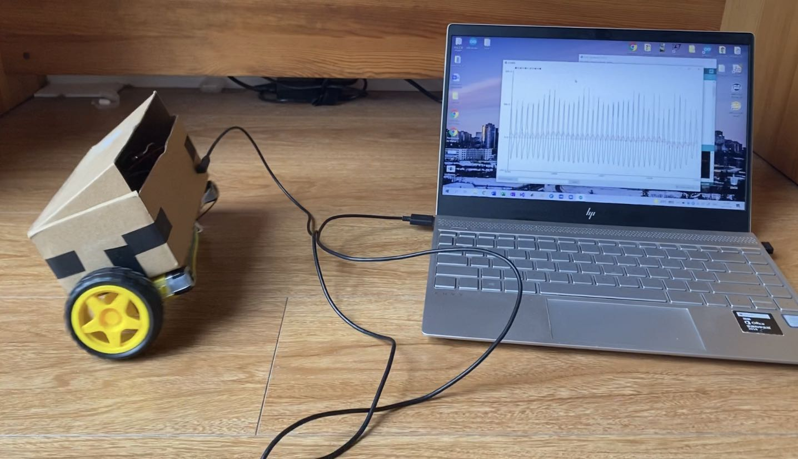
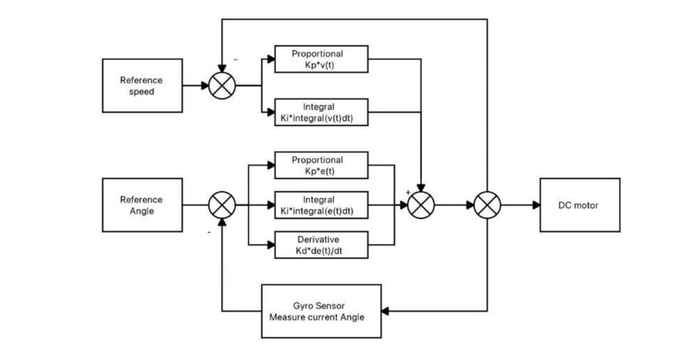
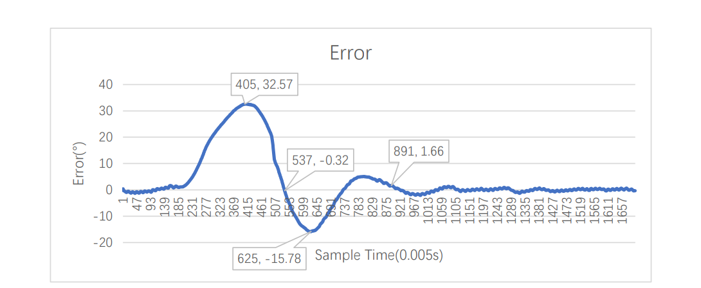

24-hour Clock
I programmed C language in ATMega328P by MPLAB X IDE to build a 24-hour clock on the LCD screen. The LCD clock shows the time and updates the time per second. Three pushbuttons were able to interrupt the system and adjust the time in a second, minute or hour number to adjust to the user's local time. The time display is chosen to be in 24-hour format. The LCD clock has a background light, so no worries about reading the clock time under bright or dark room light.
void timeCounter_init(){
TCCR1A = 0; // Disengages OC1A OC1B pins from timer
TCCR1B = (1<<WGM12); // mode 4 [WGM13:10] = 0100, CTC, top = OCR1A
// timer pre scaler = 256
TCCR1B |= (1<<CS12);
// interrupt every (8000000)/256 = 31250 is 1 second)
OCR1A = 31250;
// enable output compare
TIMSK1 |= (1<<OCIE1A);
// enable total interrupt
sei();
}
Two-wheels Auto Balancing Robot
Two wheels auto balancing robot includes two DC motors with wheels, a 2000mAh battery, a motor driver, a microchip controller and an accelerometer and gyro. The robot is designed to be auto-balanced while the external force is introduced. The system is unstable originally because the center of gravity causes the body of the robot to fall to one side. A closed loop system with a PID controller stabilizes the robot by keeping the center of gravity of the whole system perpendicular to the ground.
PID controller is used to stabilizing the robot based on the error input. The input of the feedback system is the angle between 90 degrees (perpendicular to the ground) and the body of the robot.
Where 𝑒(𝑡) is the error input, ∫ 𝑒(𝑡)𝑑𝑡 is the cumulated errors over time, and 𝑑𝑒(𝑡)/𝑑𝑡 is the rate of change of current error.The 𝐾𝑝,𝐾𝑖,𝐾𝑑 three parameters decide the weights of each term. Replacing the continuous-time signal to discrete-time signal for MCU, the equation is:
𝑒 is the error between 𝜃, current angle measurement and the reference angle, ğ‘ ğ‘¢ğ‘š(𝑒) is the sum of each error measured by time, 𝑒′ is the previous error, and the 𝑑𝑡 is the sample time, which is 0.005 seconds for ESP8266.
During the testing, when the external force is added to the robot, the present overshoot to the step response is 48.45%, with peak time 1.1s, rise time 0.66s, and the settling time 2.43s. The angle PID controller parameters are: Kp = 60; Ki = 220; Kd = 18; The velocity PI controller parameters are: Kp = 0.15; Ki = 0.00025.
Last Update: 2022-08-17